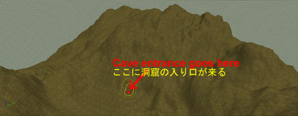
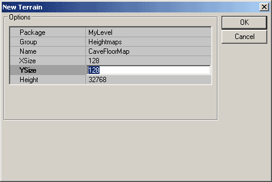
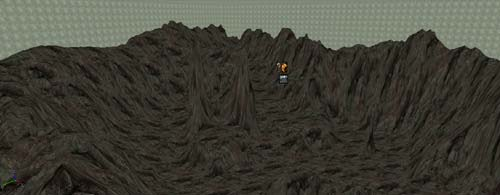
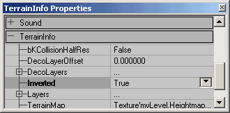
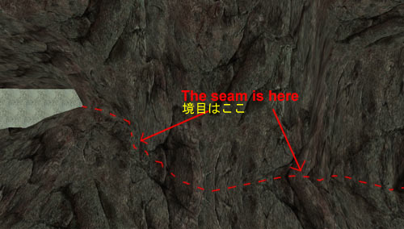
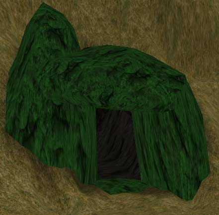
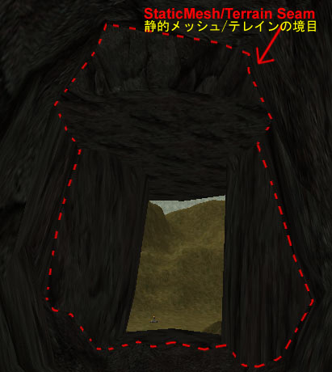

UDN
Search public documentation:
ExampleMapsCavernsJP
English Translation
한국어
Interested in the Unreal Engine?
Visit the Unreal Technology site.
Looking for jobs and company info?
Check out the Epic games site.
Questions about support via UDN?
Contact the UDN Staff
한국어
Interested in the Unreal Engine?
Visit the Unreal Technology site.
Looking for jobs and company info?
Check out the Epic games site.
Questions about support via UDN?
Contact the UDN Staff
地下洞窟
本書の概要：テレインを使用して洞窟を作成するための簡単なガイドです。本書は中級者用です。 本書の変更記録：最終更新 Tom Lin (Main.DemiurgeStudios)、本書を要約。オリジナル作成者 Jason Lentz (Main.DemiurgeStudios).はじめに
このサンプルマップでは、2つのテレインといくつかの静的メッシュを使用して、地下の洞窟をすばやく、手軽に作成する方法を説明します。本書はテレインが作成でき、レベルに静的メッシュを追加でき、一般的なUnrealEd インターフェースに慣れている読者を前提としています。内容
- 地面テレイン用テクスチャ。
- 洞窟テレイン用テクスチャ。
- 洞窟入り口の静的メッシュ。
- 洞窟に追加するディテール用静的メッシュ。
洞窟の設計
最初に洞窟を覆う地面用のテレインを作成しなければなりません。この地面テレインを作成するときに入り口を作る位置を覚えておくと良いでしょう。
地面テレインの下に洞窟用の部分を決めると、洞窟用に別々のゾーンの作成にかかることができます。このゾーン用のブラシはいびつな形にがちですが、BSP ホールを防止するためできるだけ単純に保ちながら操作します。 洞窟用に別のゾーンを作成すると、レベルをかなり最適化できるばかりでなく、雰囲気がまったく違う効果を演出することができます。たとえば、霧の濃さや色、エコーや反響、特別なライティング条件など。
洞窟用に別のゾーンを作成すると、レベルをかなり最適化できるばかりでなく、雰囲気がまったく違う効果を演出することができます。たとえば、霧の濃さや色、エコーや反響、特別なライティング条件など。
洞窟のテレインの挿入
洞窟内部のテレインは、それを覆う地面テレインほど大きくなくてよいので、このテレインを作成するときはサイズとスケールを設定し、初期最適化を指定することができます。
この例の地面テレインは 256 x 256 に設定してあり、この新しいテレインは 128 x 128 になります。しかし、不要なクワッドを非表示にすると余分なクワッドは隠れるので、洞窟テレインが必要より多少大きくてもかまいません。 ここで、すり鉢型または、何でもよいので洞窟の床にしたい大まかな形を作成します。洞窟テレインの部分を洞窟の入り口になる部分に確実に接するように持ち上げます。
次に、1つ目の洞窟と同じ方法で、同じ大きさの2つ目の洞窟テレインを標準の位置に作成します。そのテレインのプロパティを開き[テレイン情報] タブを表示し、[Inverted field(反転フィールド)] を True にセットします。これが洞窟の天井になります。
洞窟の天井と床に同じスケール、同じテクスチャを指定した場合、Top Viewportでテレイン情報が完全に一致していなくても、一緒に実行すると 2 つのテレインが上手く調和するのが分ります。
一度洞窟テレインを希望通りに設定すると、余分な非表示のテレインのクワッドをビジビリティー ツールでカットできます。これは Top Viewport からの方が実行しやすいですが、bInverted の設定を一時的に反転する必要が有り、および/または任意で表示/非表示にできるグループに割り当てる必要が有ります。bInverted の設定はご使用のレベルのいろんなテレインに設定されています。
入り口の追加
おおまかな洞窟マップができたら、洞窟の入り口を作成します。静的メッシュを挿入し、メインの地面テレインに埋め込みます。このサンプルマップでは、洞窟への BSP の入り口を覆うため、単純な巨岩の静的メッシュが繰り返し使用されます。
これで、入り口を隠している地面テレイン クワッドはすべて回転することができます。入り口の洞窟側は、地面の底面のテレインを持ち上げ、天井のテレインを引き下げ静的メッシュにあわせます。これで洞窟の入り口を隠しているものは洞窟を作成した BSP だけです。Zone Portal(ゾーンポータル)スライスを入り口静的メッシュに通し、洞窟ゾーンの BSP ボリュームの表面と完全に交差していることを確かめます。これで洞窟は完全に機能するようになりました。少し手を加えると入り口の境目が完全に見えなくなります。
マップを実行しテストします。洞窟の雰囲気
作成した洞窟をよりリアルに洞窟らしく見せる方法は沢山あります。1つの分りやすい方法は、自分自身の特別な洞窟として、外観と感触を特定の静的メッシュを追加して作成する方法です。洞窟にはさまざまな形とサイズがあります(空想の世界でも現実の世界でも)。ここでは、簡単なトリックで洞窟を演出する他の方法を挙げます水の流れと水たまり
洞窟はテレインで作成しているため、水の流れや水たまり、溶岩、そのた洞窟内の液体を作成する方法は非常に簡単に知ることができます。水の流れの道筋を描くだけで、ペイントツールがその道筋をテレインに落し、その上にウォーター テクスチャ シートを重ね、WaterVolumeを追加します。 特殊なボリュームの作成について詳しくは「VolumesTutorial」を参照してください。
特殊なボリュームの作成について詳しくは「VolumesTutorial」を参照してください。
ライティングとビジビリティ
もう一つの分りやすい方法は、ライティングを調整することです。洞窟は自分のゾーンにあるので、周囲の明るさやまで洞窟全体の色合いまで落として、周囲の微妙な明るさを違った色で表現できます。ただし、ほとんど洞窟について光源の作成には毎回違う解決法を編み出す必要がります。このサンプルマップには、洞窟を照らす小さな炎と溶岩だまりがあります。 その他の周囲の環境を追加するには、別々のディスタンスフォグをこのゾーン内にセットする方法もあります。霧の濃さと色によって、洞窟内部をじめじめして湿気の多く、しずくが落ちてくるような洞窟にしたり、乾燥した煙が充満したドラゴンの巣のようにもできます。
その他の周囲の環境を追加するには、別々のディスタンスフォグをこのゾーン内にセットする方法もあります。霧の濃さと色によって、洞窟内部をじめじめして湿気の多く、しずくが落ちてくるような洞窟にしたり、乾燥した煙が充満したドラゴンの巣のようにもできます。